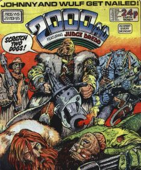
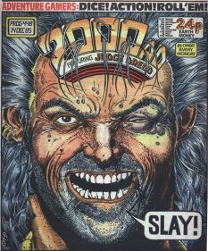
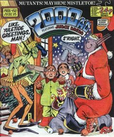
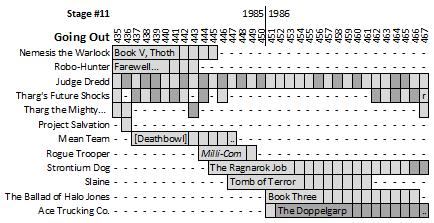
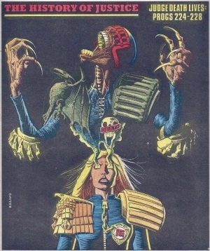
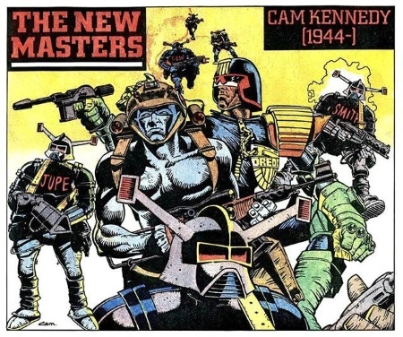

|  |  |  |
| Prog 445 by Carlos Ezquerra | Prog 448 by Glenn Fabry | Prog 450 by Alan Davis |
Generally the comic seems strong and confident in this stage, but when people think of a golden age they're probably remembering Nemesis, Strontium Dog, Slaine and Halo Jones. Conversely, they're probably not thinking of Mean Team, Rogue's return from Horst or The Doppelgarp.
Nemesis the Warlock: Book V - The Vengeance of Thoth
Skipping ahead ten years from Book IV but carrying on the Thoth plot from Book III, this sees Nemesis get married to Magna but then almost immediately do a Total Recall, but not before she's eaten Grobbendonk. Varty slar!
Original Torquemada died for good in the previous book, but Thoth goes and grabs a copy from earlier in time. Oddly, the new Torque teams up with Nemesis and the ABC Warriors (who have replaced Mad Ronn with Mek-Quake) and by the end of the book they're all on the tail of Thoth and his pet: a fireball breathing Satanus (because Millsverse).
More unpredictable mash-up madness in Book VI, next stage...
Robo-Hunter: Farewell, My Billions
101 progs after Sam Slade's Last Case it's a surprise to see him return to the prog for his "first case since his last case". It's a comedy of errors in which Hoagy and Stogie attempt to get Sam back into the Robo-Hunting game despite his being quite content as a rich retiree.
Robo-Hunter, Samantha Slade (about Sam's niece) plays out from 2004-2007 (written by Alan Grant), and there's a one-off flashback style story (The Bodj Job) in 2014's Sci-Fi Special (authentically written by Alec Worley). More controversially, Mark Millar started writing knock-off stories under the banner of Robo-Hunter in 1991 but most kindly these should be considered a temporary reboot.
Judge Dredd
1985 finishes out with a sequence of short tales that riff on existing themes. Most memorable would be The Man Who Knew Too Much, Magnificent Obsession, Death of a Politician, Love Story and The Squadron That Time Forgot. Prog 450 stands out with the fourteen-page A Merry Tale of the Christmas Angel.
1986 starts strong with The Warlord and has significant Dreddverse beats in A Chief Judge Resigns (McGruder takes The Long Walk, Hershey joins The Council of Five) and the absolutely vital Letter From a Democrat.
More short, world-building tales next stage...
Tharg's Future Shocks
Peter Milligan, Oleh Stepaniuk and Grant Morrison share script duties on these one-off shocks. Of note seems to be Morrison's first work for the prog in 466's Hotel Harry Felix.
More in the next stage...
Tharg the Mighty
Exit the Wally, Enter the Beast; Psmith's Farewell & Supersub tell veiled tales of Nerve Centre shenanigans.
More in the next stage...
Mean Team *NEW THRILL*
Blackhawk meets The Mean Arena, in that it's got aliens but also an urban future sport. Oddly, it's more reminiscent now of computer games: so like a cross between League of Legends and Call of Duty. This may mean it was ahead of its time, but it's an odd fish. The lead character, Bad Jack Keller, is a murderous asshole and the best thing that can be said about the melodrama of one of the player's having his brain transplanted into a panther is that his reaction when he wakes up and looks in the mirror is pure comedy gold.
It feels like it loses its way, having the team transplanted to what seems like an entirely new story (itself a sort of Meltdown Man meets Death Planet) at the end of this opening salvo, but the first page lays this out as the intention all along. Can perhaps be summed up well with this quote: "Just one man - and a cat with a man's brain, but they were too much for the Black Swamp Dragons."
Prog 447 says "they'll be back in the spring [of '86]", but they don't return until the summer of 1987, 78 progs later.
Rogue Trooper: [Return to Milli-Com]
Rogue found a cure for his bio-chipped buddies on Horst and returns to base. A firing squad pretend to shoot him (for a joke) and then the highest ranking Souther general punches him in the face. That's literally what happens.
Peace between the Norts and Southers beckons but is sabotaged by mysterious aliens who teleport troops in on targeted assassination missions. Of course, this means the bio-chips don't get re-gened, the peace process is spoiled and ends with Rogue going ... rogue ... again. (This time, though, he seems to be leading a rag-tag mixed group of Norts and Southers: like he has a rogue gang.)
More in the next stage after a 45-prog break...
Strontium Dog
Key here is The Ragnarok Job, a 21-prog epic that contains Wulf's origin story whilst also setting up Max Bubba as a plastic-wrapped nemesis. By the end of the tale, both Wulf and Johnny have died...
...except [SPOILER ALERT] Alpha wasn't really dead, just playing possum (like he did once in Starlord). The two-part coda (sometimes known as Smiley's World) see's Alpha nursed back to health.
Johnny returns seeking vengeance in the next stage...
Slaine: Tomb of Terror
Here, Slaine the comic runs alongside a Slaine choose-your-own-adventure game that's attached to the strip for fifteen issues. Slaine (and YOU!) must stop the dark god Grimnismal from awakening from the ... Tomb of Terror!
Tying in thematically with Slaine's Tomb of Terror foray into choose-your-own-adventure, the first two issues of Diceman were released during this stage and contained two more Slaine adventures (Cauldron of Blood & Dragoncorpse) alongside a slew of other content.
Returns after a 31-prog break in the next stage...
The Ballad of Halo Jones: Book Three
Halo's always had tragedy in her life, but here it reaches new heights and almost drives her mad. A war foreshadowed in earlier books becomes central and ideas of time and gravity play with perspective as Halo struggles to escape a dark web threatening to engulf her.
Not only the last of Halo Jones, but also the last of Alan Moore in the prog. Farewell, bearded wizard!
Ace Trucking Co.
So Ace, who died by flying into the sun, actually instead traveled to a different dimension, where he meets up with another Ace (& crew) and together they adventure in The Doppelgarp. There's definitely been a shift in this story from being inventive and fresh, to just being punny (e.g. The Dave Cluck Five).
Continues in the next stage...
There's a great celebration of the Dreddverse with the eleven History of Justice posters (re-purposed from Eagle reprint covers) which are spread throughout progs 436-452. They don't show up in Barney, but you get seven by Brian Bolland and four by Mike McMahon. Here's an example from prog 441:
We also get The New Masters, a seven-poster series celebrating Ian Gibson (454), Robin Smith (457), Brett Ewins (458), Cam Kennedy (460), Cliff Robinson (465), Massimo Belardinelli (466) and Carlos Ezquerra (467). Here's Cam's:
